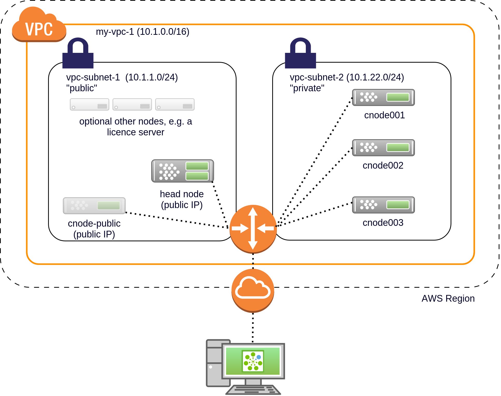
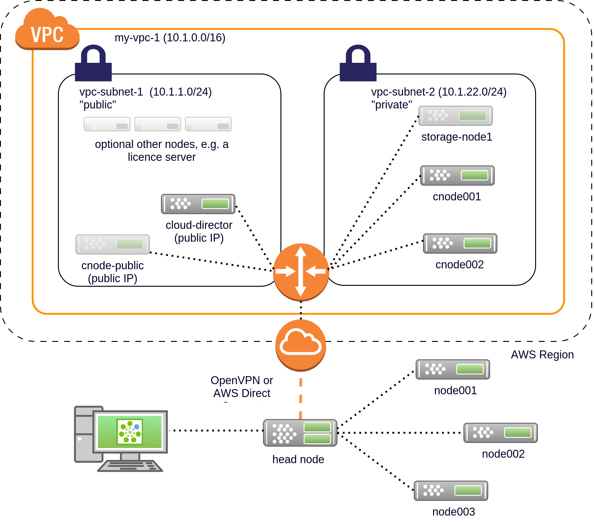

Bright 7.3 update
Cloud
Piotr Wachowicz
www.brightcomputing.com
Agenda
CaaS - Cluster-as-a-Service (1/2)
CaaS - Cluster-as-a-Service (2/2)
caas-toolsKrusty upgrade 7.1->7.3 later this year
99 problems, Krusty ain't one
solution
cm-bright-image
cm-bright-image
cm-bright-image
New image creation process - 4 stepscm-bright-image
Create headnode images for various platformscm-bright-image - Future
Why should you care?
Fast cluster creation (2-3 min)
Faster krusty - less data moved around.
Q?

Bright OpenStack
Bright OpenStack in general
Most important thing about OpenStack Mitaka
If it breaks, we all blame Marko and Stefan! ;-)
OpenStack Mitaka upstream
What's new in Glance, Cinder, Neutron, Nova, Keystone
OpenStack Mitaka
Glance (image storage)
Cinder (volume as a service)
Neutron
Heat (orchestration) (and thus CaaS)
Q?
Cloud Bursting
Cloud Bursting - two types
Cluster-on-demand

Cluster extension

in 7.3: Keep it simple
Simplified cloud bursting
Cloud bursting is VPC Only
VPC - virtual private cloud environmentSome history:
EC2-classic

VPC (a.k.a. EC2-VPC)

Cluster-on-Demand in VPC
Cluster extension in VPC
Problem
cluster-on-demand VPC hard to create
Solution
cm-cluster-on-demand
Cluster-on-demand
Cluster extension
cm-cluster-extension
Replaces
One CMGUI wizard, instead of two
Why should you care?
Easier to test your stuff in the cloud
new cluster-extension wizard
And previously
Almost there
now, VPC
Old wizard in a nutshell
Other new AWS features
AWS Direct Connect
EBS Snapshots
Only HVM
Q?
cmsub
cmsub
cm-setup
python framework for configuring stuff
cm-setup - unified configuration suite
cm-setup
cm-setup - Undo/Abort/Retry/Skip
## Progress: 25
#### stage: clusterextension: Remove Cloud Nodes
### ERROR ###
Error: 'Module' object has no attribute '_categories'
Please type:
'u' to undo all of the stages
'a' to abort to terminate the setup in place, i.e. don't undo previous steps
's' to skip the current stage, and proceed with the next one (not recommended)
'r' to retry the current step and continue if possible (not recommended)
'i' to print more info about the error (stacktrace)
Undo/Abort/Retry/Skip/Info: u/a/r/s/i:
(also works from CMGUI!)
cm-setup
Why #2?cm-setup - tool
1: tool_config = setup.engine.tool.Tool()
2: tool_config.tool_name = "Example0"
3: tool_config.script_name = "cm-example0-setup"
4: tool_config.submodules = ["example0"]
5: tool_config.default_stage_set = ("example0", "my_stages")
cm-setup - module
1: class Module(setup.engine.BaseModule):
2: def my_stages(self):
3: s = [FooStage(), BarStage()]
4: ss = setup.engine.stageset.StageSet(self, s)
5: return ss
cm-setup - stage
1: class FooStage(setup.engine.Stage):
2: def run(self):
3: (ret, code) = self.dialog_builder.ask_yes_no("Create?")
4: if ret:
5: os.system("touch /etc/foo")
6: self.was_created = True
7: else:
8: self.was_created = False
9:
10: def undo(self): # optional
11: if self.was_created:
12: os.system("rm /etc/foo")